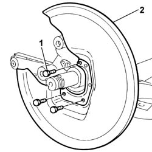

3310B59 REAR BRAKE DISC GUARD - R R
- Path
- Procedures > 33 BRAKES > 3310 DISC BRAKES > 3310B REAR DISC BRAKES > 3310B59 REAR BRAKE DISC GUARD - R R
- Kind
- repair procedure (removal / refitting; the operation number is the code)
- Applies to
- all engines; all production periods
- Interactive page
- https://sloeber94.github.io/elrnDB-fUlss/en/#/179007296
Applies to: all engines; all production periods
 Removing
Removing
 Refitting
Refitting- Position the vehicle on a lift.
Op. 4450B06 LEFT REAR WHEEL R R
Op. 4450D10 HUB OF ONE REAR WHEEL, L/H OR R/H - R+R WITH WHEEL REMOVED
1. Undo the retaining bolts.
2. Remove the brake disc guard.

Applies to: all engines; all production periods
- Proceed in the same way to remove the right rear brake disc guard.
Applies to: all engines; all production periods
Refitting
Removing- To refit the left rear brake disc guard, proceed as described below.
- Position the brake disc guard and tighten the fixing bolts.
Op. 4450D10 HUB OF ONE REAR WHEEL, L/H OR R/H - R+R WITH WHEEL REMOVED
Op. 4450B06 LEFT REAR WHEEL R R
Op. 0010T65 HYDRAULIC BRAKE SYSTEM BLEED AIR
Op. 0010T66 MANUAL GEARBOX OIL CHECK LEVEL AND TOP UP IF NECESSARY
- Remove the vehicle from the lift.